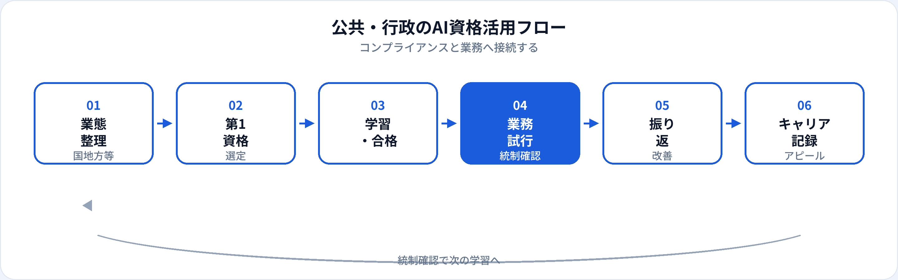

公共・行政では、生成AIが事務効率化と情報漏えい・説明責任の両方を引き起こし、省庁・自治体が利用ルールとガバナンスを整備する動きが加速しています。公務員・公共機関職員にとってAI資格は、ツールを禁止するだけでなく、住民・国会・監査に説明できる共通言語になります。本記事では、国家・地方・公共法人で働く方が取るべきAI資格を業態別・職種別に整理し、2026年6月時点で活かし方とキャリアまで解説します。管理職向けは別記事、金融・医療・教育向けは各業界記事、3資格比較は初心者向け比較も参照してください。
公共・行政にAI資格が効く理由
行政の本質は公共の利益と説明責任です。AI資格は、職員自身がリテラシーを持ち、上司・監査・住民・国会に利用の妥当性を説明できる状態をつくる助けになります。
個人情報・情報公開の整理
住民票・相談記録・未公開政策案。生成AIパスポートの情報管理・ガバナンス章が庁内ガイドラインのたたき台になる。
行政文書・案内の効率化
広報文案・FAQ・説明資料の構成案を速く作り、現場対応・政策検討に時間を割ける。
デジタル庁・GovTech連携
マイナポータル連携・オープンデータ・RPA/AI導入検討で、非エンジニアがリスク説明役として関与しやすくなる。
試験対策はこちら
業態別：国・地方・公共法人
| 業態 | AI資格の主な役割 | 試行しやすい業務（例） | 第1候補 |
|---|---|---|---|
| 中央省庁・独立行政法人 | 政策文案・国会答弁準備・庁内統制 | 説明資料の骨子、FAQ更新案（未公開情報は入力しない） | 生成AIパスポート |
| 都道府県 | 広域施策・条例案・広報 | 住民向け案内文、説明会資料のたたき台 | 生成AIパスポート |
| 市区町村 | 住民窓口・子育て支援・防災広報 | 窓口FAQ、多言語案内の構成案 | 生成AIパスポート |
| 公営企業・特殊法人 | 料金案内・サービス説明・内部統制 | 利用者向け説明文、社内マニュアル更新案 | 生成AIパスポート → ITパスポート |
| デジタル推進・GovTech | ベンダー選定・オープンデータ・分析 | 要件整理リスト、公開データの可視化方針 | 生成AIパスポート → G検定 |
職種別の第1候補
| 職種・役割 | 第1候補 | 第二候補（任意） |
|---|---|---|
| 一般事務・庶務 | 生成AIパスポート | —（庁内規程理解が中心） |
| 政策企画・調整 | 生成AIパスポート | G検定（データ分析・政策評価） |
| 住民窓口・相談 | 生成AIパスポート | — |
| 広報・広聴 | 生成AIパスポート | 広報・PR向け記事 |
| 入札・契約管理 | 生成AIパスポート | ITパスポート（システム入札） |
| IT・情報システム | 生成AIパスポート → ITパスポート | G検定 |
| デジタル推進・DX室 | 生成AIパスポート → ITパスポート | G検定 · DS検定 |
| 課長・部長・管理職 | 生成AIパスポート | 管理職向け記事 |
おすすめ資格の比較
| 資格 | 公共・行政との相性 | 学習時間目安 | 向いている担当 |
|---|---|---|---|
| 生成AIパスポート | ◎ 行政文書・案内・統制整備に直結 | 20〜40時間 | 事務・企画・窓口・管理職全般 |
| ITパスポート | ○ セキュリティ・クラウド・入札 | 40〜80時間 | 情報システム、デジタル推進、入札 |
| G検定 | ○ オープンデータ・政策分析・AI導入 | 80〜150時間 | 政策企画、GovTech、分析担当 |
| DS検定（リテラシー） | ○ 統計・可視化の読み方 | 40〜80時間 | 政策評価、オープンデータ活用 |
第1候補と学習順
-
第1：生成AIパスポート（基本）
行政現場の第一候補。個人情報・情報管理・ガバナンスを学び、案内文・説明資料の安全な使い方に接続。
-
第2（IT・入札）：ITパスポート
情報システム部門、クラウド移行、システム入札・ベンダー評価。セキュリティ基礎の共通言語に。
-
第2（政策・分析）：G検定
オープンデータ、政策評価、AI/RPA導入プロジェクト。行政ドメインと組み合わせてキャリアの差別化に。
公共・行政の活用フロー

行政では学習→業務試行→統制確認→振り返りのサイクルが必須です。上司・情報管理担当・監査・住民説明との合意形成が、他業界より重要になります。
業務別：安全な活用シーン
| 業務 | 生成AIの使い方（例） | 入力してはいけない例 |
|---|---|---|
| 広報・住民案内 | 案内文・FAQ・説明会資料の構成案 | 個別相談内容・氏名・住所 |
| 政策・企画文案 | 論点整理、公開済み資料ベースの骨子 | 未公開の政策案・調整中の草案 |
| 事務・議事録 | 議事録の章立て案、手続き説明のたたき台 | 個人情報を含む相談記録・住民票情報 |
| 入札・契約 | 要件チェックリストの整理（公開情報ベース） | 入札仕様書の機密部分・ベンダー個別情報 |
| デジタル推進 | 利用者向け説明文案、社内研修資料の骨子 | システム認証情報・脆弱性情報 |
最終判断・答弁・個別行政処分はAIに委ねません。住民の相談内容をAIに入力して回答案をそのまま返す運用も、多くの庁内規程で禁止されています。
合格後の実践
1か月目
所属機関のAI利用ルール・情報セキュリティポリシーを確認。資格で学んだ個人情報・ガバナンスと照合。情報管理担当・上司に相談。
2か月目
低リスク業務1つ（広報文案、FAQ更新案等）で試行。必ず職員が最終確認。個人情報・未公開情報は入力しない。
3か月目以降
成果を記録（作成時間短縮、案内品質改善等）。庁内ガイドライン整備・研修資料に反映。管理職向け説明資料を作成。
行政現場の注意点
| やってよいこと | 避けるべきこと |
|---|---|
| 庁内規程・承認済みツールの利用 | 個人の無料AIに住民情報・公文書を入力 |
| 案内文・説明資料のたたき台生成（職員が検証） | AI出力をそのまま住民・国会に提出 |
| 情報管理・説明責任のルールを明示 | 職員のAI利用を黙認しルールなし |
| 上司・情報管理担当との事前合意 | 「資格があるから」個人情報保護法・庁内規程を無視 |
キャリア・転職でのアピール
庁内評価・昇進
例：「生成AIパスポート（2026年○月）取得。庁内AI利用ガイドライン策定に参画し、住民案内文案作成時間を30%短縮。」
行政では資格＋統制整備＋業務改善実績のセットが説得力を生みます。記載例は履歴書ガイドを参照。
民間・コンサル・SIerへの転職
行政ドメイン＋生成AIパスポート＋ITパスポート/G検定の組み合わせは、公共系プロジェクトで強み。企画職向け記事、SIerからのキャリアも併読。
民間から公共へ
AIリテラシーは補完になります。行政の専門性は公務員試験・現場経験・法令知識で別途積み上げる必要があります。
資格だけでは足りない点
行政の評価は公共性・説明責任・法令遵守です。資格はリテラシーと学習意欲の証明になりますが、法令知識・現場調整力・政治的判断は現場で培う領域です。合格後は、上司・情報管理担当と連携しながら小さく試すことを優先してください。
よくある質問
公共・行政におすすめのAI資格はどれ？
多くの現場では生成AIパスポートが第一候補。IT・デジタル推進担当はITパスポート、政策分析・GovTech担当はG検定も検討。
国家公務員・地方公務員で第一候補は同じ？
基本的に同じ。個人情報保護・情報公開の要件は共通。業務内容に応じて第二候補を足すイメージ。
住民情報・公文書をAIに入力してよい？
原則入力しない。氏名・相談内容・未公開文書は個人情報・秘密情報。匿名化した文案案生成に限定。
ITパスポートは行政で必要？
全職員必須ではない。一般事務・企画なら生成AIパスポートで十分なことが多い。情報システム・デジタル推進・入札担当はITパスポートの価値が上がる。